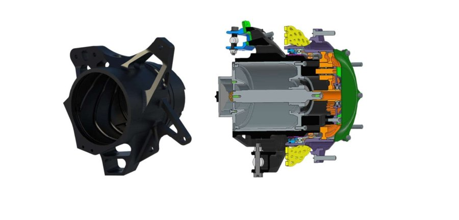
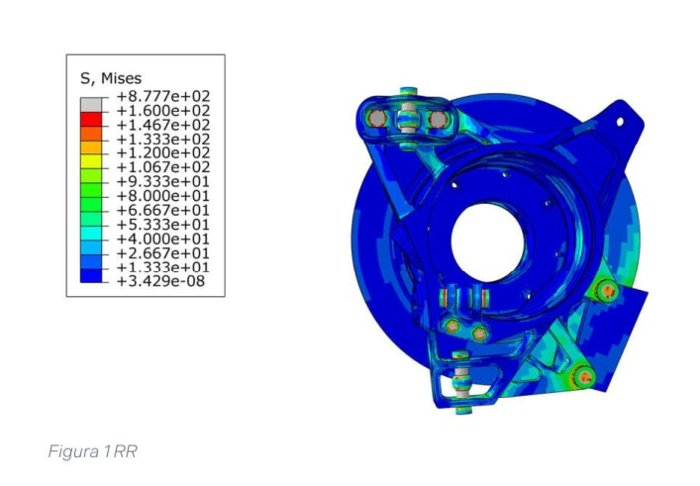

DYNAMIS PRC - Formula Student
 From March 2022 to September 2026, I served as a Structural Engineer for DYNAMIS PRC, the official Formula Student Team of Politecnico di Milano. Working within a demanding, multidisciplinary engineering environment, I focused on structural design, finite element analysis (FEA), and mechanical optimization for critical vehicle assemblies. My core responsibilities were divided between developing high-performance, lightweight braking systems and spearheading the research, design, and additive manufacturing optimization of the wheel uprights.
From March 2022 to September 2026, I served as a Structural Engineer for DYNAMIS PRC, the official Formula Student Team of Politecnico di Milano. Working within a demanding, multidisciplinary engineering environment, I focused on structural design, finite element analysis (FEA), and mechanical optimization for critical vehicle assemblies. My core responsibilities were divided between developing high-performance, lightweight braking systems and spearheading the research, design, and additive manufacturing optimization of the wheel uprights.
Braking System & Custom Caliper Engineering
 To address aggressive weight targets without sacrificing pedal feel and hydraulic responsiveness, I managed the complete engineering cycle of custom, prototype-specific single-action brake calipers:
To address aggressive weight targets without sacrificing pedal feel and hydraulic responsiveness, I managed the complete engineering cycle of custom, prototype-specific single-action brake calipers:
- Dynamic Structural Analysis: Conducted extensive dynamic FEM simulations under maximum dynamic braking conditions, achieving a 30% mass reduction alongside a 25% increase in structural stiffness compared to commercial racing caliper.
- Thermal & Bench Validation: Executed coupled thermo-mechanical FEA to map heat dissipation profiles across the rotor-pad-caliper interface[cite: 15]. Verified caliper seal integrity and structural stability through physical test-bench campaigns, delivering a functional, race-ready single-action assembly.
- Hydraulic Line Optimization: Developed custom MATLAB scripts to compute optimal master cylinder bore sizing, volumetric displacement, and pressure distributions, meeting stringent braking performance metrics and regulatory rules.

Upright Design & Advanced Topology Optimization
As lead of the upright development and R&D pipeline, I directed the kinematic integration and mass reduction initiatives across consecutive prototype iterations:
- Static FEA Optimization: Evaluated combined multi-axis load cases (simultaneous cornering, curb impacts, and heavy braking), achieving a 20% mass reduction while improving stiffness by 10% over previous architectures.
- Additive Manufacturing & Generative Design: Leveraged nTopology to generate complex organic lattice and shell topologies, aligning material density with principal stress trajectories to take full advantage of metal additive manufacturing processes.
Rear Upright Design

- Integrated Housing Design: Single cylindrical case hosting the bearings, geartrain, motor (8 threaded mounts) and cooling jacket, with dedicated mounts for the upper/lower A-arms, tie rod, pushrod and brake temperature sensor.
- Kinematic-Aware Detailing: Angled UBJ support and mounting faces to minimize the displacement of the suspension hardpoints from their ideal kinematic position across camber setup changes.
- Topology-Driven FE Optimization: Rough model topologically optimized and refined for CNC manufacturability, then validated with a full assembly-level FE analysis (bolts, bearings and mountings modeled as contact interactions) under the maximum braking load case.

Tools and Technologies
- CAD & Generative Design: SolidWorks, CATIA, nTopology
- FEA & Simulation: ANSYS Mechanical, Abaqus
- Numerical Modeling: MATLAB
- Manufacturing: Additive Manufacturing (DMLS/SLM), CNC Precision Machining